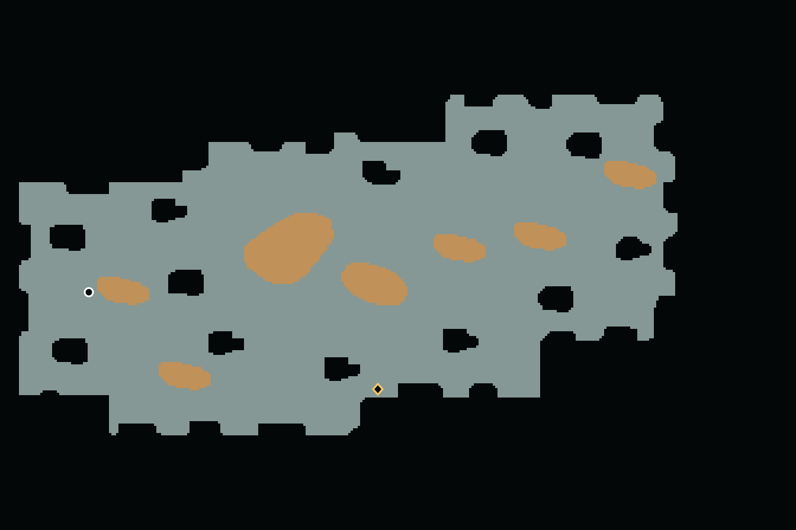
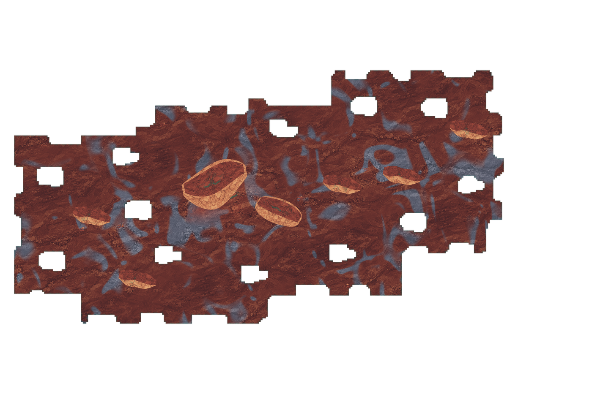
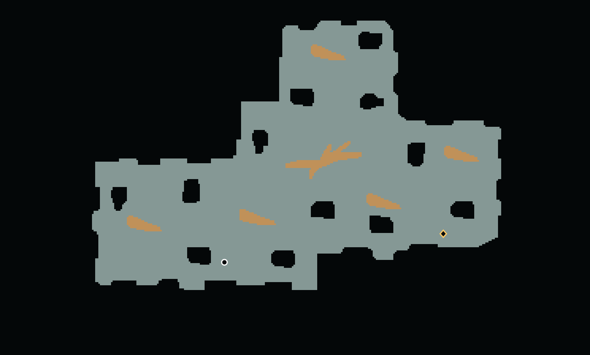
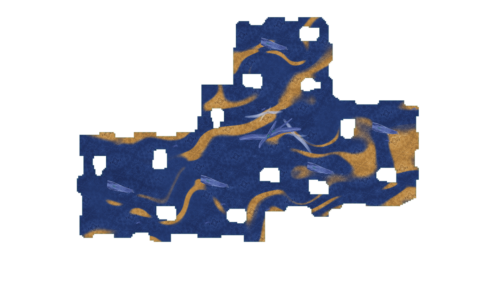
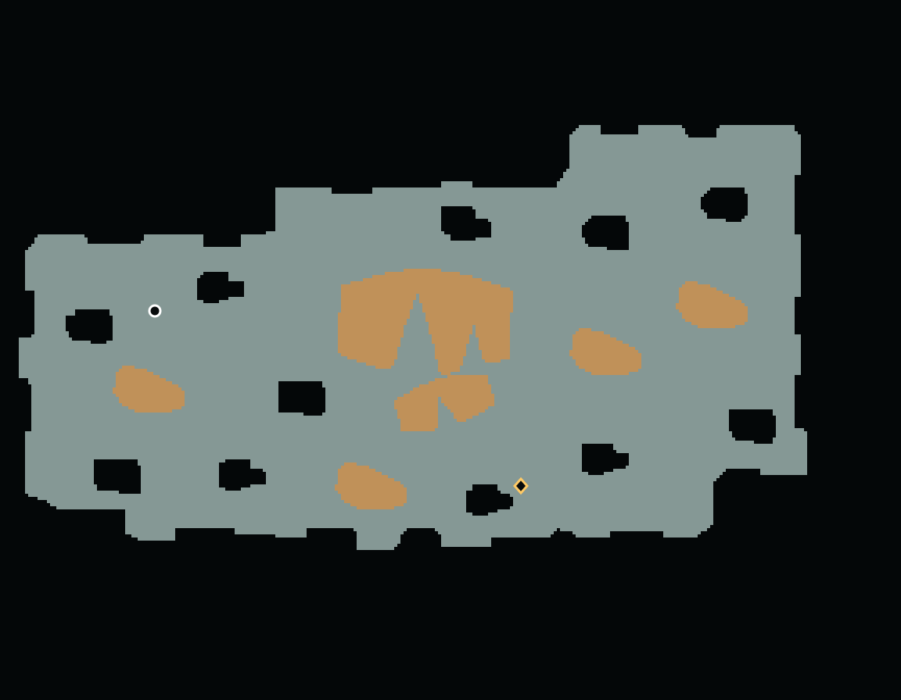
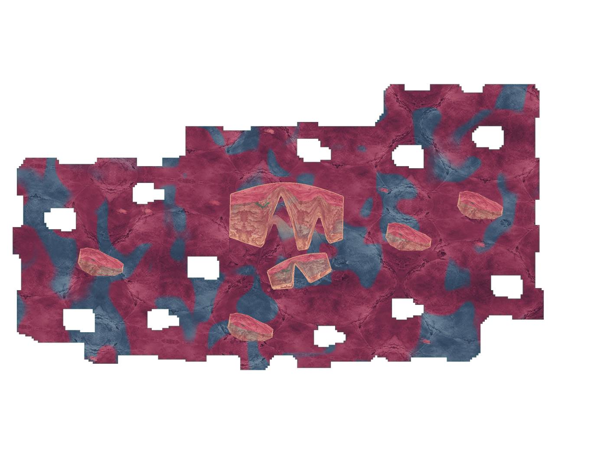

原生联合生成 · 实际地图检查
土地、内部空洞和实体在同一布局阶段生成。以下 3 张来自完整准入后的实际地图，未作图像修补；限定样本不代表全库或潜行体验通过。
灰绿为地面，赭色实体仅阻行，黑色空间缺失同时阻行与遮视。完整证据
余烬脊 cinder-ridge
请求种子 156 · 实际种子 1743883399 · low · 生成耗时未单独采集
真实支撑与阻挡 · 白圈出生／金菱撤离
正式材质全图 · 不含迷雾与运行时灯光
查看完整准入记录（JSON 清单）
纤维·未结 crystal-fibre
请求种子 156 · 实际种子 156 · low · 生成耗时未单独采集
真实支撑与阻挡 · 白圈出生／金菱撤离
正式材质全图 · 不含迷雾与运行时灯光
查看完整准入记录（JSON 清单）
破膜盆地 ruptured-film
请求种子 156 · 实际种子 156 · low · 生成耗时未单独采集
真实支撑与阻挡 · 白圈出生／金菱撤离
正式材质全图 · 不含迷雾与运行时灯光
查看完整准入记录（JSON 清单）